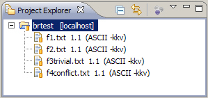
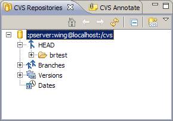
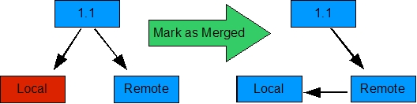

Introduction
In any source control management (SCM) environment, branching is a powerful mechanism for controlled isolation. Despite being a simple concept, controlled isolation is often avoided in practice because of its implementation complexities. This article demonstrates how to perform branching with Eclipse's CVS support. The Eclipse on-line documentation covers this topic, but does not provide an end-to-end scenario. The intended audience is software development professionals with an appreciation for the roles of branch and merge techniques in SCM.This article will employ a scenario of two programmers, Paul and Wing, working on separate branches of the same project. Paul will branch off main and modify some files while Wing continues to work on the main branch, also modifying files. Paul will then merge his branch back to the main branch. In doing so, Paul will address the resulting merge conflicts. This flow is diagrammed below in the Scenario Diagram.
The process is repeated for a second iteration to demonstrate the so-called merge-again scenario. Work continues on the branch after the first merge; then the branch is merged again later. The merge-again scenario requires that you keep track of when you last merged via tags. This will be demonstrated later in this article.
The Scenario Diagram below will be referenced throughout this article.
Part 2 of this article adds the rebase operation to the scenario.
Setup
The sample will use a few text files inside a simple project. In order to carry out the sample yourself, you should already have a working connection to a CVS repository in your Eclipse workspace.If possible, you should considering creating a new repository for this scenario. That's because tags and branches are the central theme of this article. And unlike files in a CVS repository, the tag and branch metadata are difficult to selectively remove if you want to start over. It's much easier to just wipe-out the repository and start with a new one. If you do create your own CVS repository for this article, see the Troubleshooting section in Part 2 for setting the necessary permissions on a new CVS repository.
The setup instructions below can be expedited through importing the brtest.zip into a simple project brtest.
- Create a new simple project called brtest.
- Add a new file called
f1.txt. Add the following contents.This file will only be edited by Paul This line will be changed later. This line will be changed after the first merge. The rest of this file will remain the same.
- Add a file called
f2.txtwith the following contents.This file will only be edited by Wing. This line will be changed later. This line will be changed after the first merge. The rest of this file will remain the same.
- Add a file called
f3trivial.txtwith the following contents.This file will be edited by Paul and Wing. This line will be changed by Paul only. This line will be changed by Paul only after the first merge. This line will be left alone. This line will be changed by Wing only. This line will be changed by Wing only after the first merge. The rest of this file will remain the same.
- Add a file called
f4conflict.txtwith the following contents.This file will be edited by Paul and Wing. This line will be changed by both Paul and Wing. This line will be changed by both Paul and Wing after the first merge. The rest of this file will remain the same.
After adding the above files to your project and checking them into CVS, your resource view should look something like the screen shot below.

Merge Method
When branching off a development stream, it is often advisable to rebase before merging the subbranch back to the main branch. To rebase means to merge the contents of the main branch to the subbranch. If any conflicts are to be resolved, they are done on the subbranch rather than the main branch. If the merge goes well, the subbranch is merged to the main branch. After having previously resolved all merge conflicts, this last merge would be a trivial one. The advantages of taking the extra rebase step is that it avoids having conflicts on the main branch and it keeps the subbranch synchronized with the main branch. This is the approach taken in Part 2.In this article, our primary focus is the merge mechanism of Eclipse's CVS support, not the particular branching strategy. So here in Part 1, we stick with the branch method illustrated in the Scenario Diagram.
Creating the Branch
At this point, Paul and Wing have the same version of all files. It is now time for Paul to create an independent branch on which to work.- Right-click on the brtest project and select Team
→ Branch .... A dialog is displayed for creating the branch
and marking the start-point with a tag (also called a
Version Name). Enter a branch name like p1test. Leave
the check box checked for Start working in the branch. Notice
that a start tag is automatically filled in for you called
Root_p1test. This is the first tag labeled in the
Scenario Diagram.
You may choose a different name so long as it doesn't conflict
with an existing CVS tag. This will mark where the branch was
created. It will be used later by the merge editor to determine
what has changed since branch creation. Click OK.

Since you checked the box to start working in the branch, your workspace should already be configured to work in the branch. You can verify this in two ways. By right-clicking the project and selecting Properties and then CVS, you should see the p1test in the tag field. If you have the CVS label decorations enabled, you'll see the branch tag in the navigator view (see below).

![[Note]](images/tip.gif)
To enable CVS label decorations, go to Window → Preferences and navigate to General → Appearance → Label Decorations. Check the 'CVS' box. - This step begins the work represented as the blue box labeled
PD1 in the Scenario Diagram.
Paul will modify the first file using the p1test branch.
Open the editor for
f1.txt. Change line 3 from "This line will be changed later" to "This line changed in iter1." Save the change. - Open the editor for
f3trivial.txt. Change line 3 from "This line will be changed by Paul only" to "This line changed by Paul in iter1." Save the change. - Open the editor for
f4conflict.txt. Change line 3 from "This line will be changed by both Paul and Wing" to "This line changed by Paul in iter1." Save the change. - Right-click on the brtest project and select Team
→ Synchronize with Repository. In the Outgoing Mode
view, right-click the brtest project folder and select
Commit. Enter a comment such as "First iteration changes
made by Paul." Note that for files that have changed, the revision
numbers are four digits. This is a CVS convention for branched revisions.

This commit is represented by the first red circle on the p1test branch of the Scenario Diagram.
- (Optional tag step, only required
for the merge-again scenario)
Paul is finished development for this iteration. So he will
tag this milestone with P1. This
tag will represent the base-point for the merge-again scenario.
Right-click the
brtest project and select Team → Tag as
Version ....
In the dialog that arises, enter P1 for the tag name
and click OK. This corresponds to the P1 tag
in the Scenario Diagram.
To to verify a tag was created, change to the CVS Repository view and expand Versions → brtest. The P1 tag should be visible. Now it is Wing's turn. Her work is represented in the Scenario Diagram by the blue box labeled WD1.
- Wing will make her changes in the main branch. In her
workspace she connects to CVS as "wing" to checkout the
brtest project from CVS.

She chooses the brtest under HEAD, the moniker CVS uses to designate the main branch.Since Wing has the main branch loaded into her workspace, she doesn't need to perform a branch change. As Wing, begin editing
f2.txt. Change "This line will be changed later" to "This line changed by Wing in iter1." Save the change. - Edit
f3trivial.txtin Wing's workspace. Change line 9 from "This line will be changed by Wing only" to "This line changed by Wing in iter1." Save the change. - Edit
f4conflict.txtin Wing's workspace. Change line 3 from "This line will be changed by Paul and Wing" to "This line changed by Wing in iter1." Save the change. - Commit Wing's changes with a comment like "First iteration
changes by Wing". Note her revisions numbers are all two
digits (e.g. 1.2). That's because her new revisions occur on the main
branch. This commit is represented by the first red circle on the
main branch in the Scenario Diagram.
- (Optional tag step, not required anywhere.) Since it is
a good practice to tag a milestone or a recovery point, Wing tags
this point with W1 in the same manner as the in the
previous tag. It's a good idea to tag
right before merging something into your branch so you can
recover it more easily even after a commit.
To to verify a tag was created, change to the CVS Repository view and expand Versions → brtest. The W1 tag should be visible.
The Merge
Now it is time for Paul to merge his changes into the main branch where Wing's work resides. This is designated with the M1 diamond in the Scenario Diagram.
- The first step of the merge is to point the workspace to the
target branch. In our case, the target of the merge is the main
branch. To switch the project contents to that of the main branch,
right-click on the brtest project in the Navigator view and
select Replace with --> Branch or Version .... You should
see a branch selection similar to the one below. (If you performed
the optional tagging steps, you may see some of those under
Versions. You may have to click Refresh Tags to see
them all.)
- The p1test branch is the one Paul was working on. To
switch back to the main branch, select HEAD. This is the CVS
name for the main branch. Then click OK.
The resource view should look like the one below. Notice the version numbers correspond to what Wing committed. All the version numbers are two digits. The branch name is gone which implies the HEAD branch (or main).
- Right-click on the brtest project and select Team
→ Merge .... Click the Browse button next to
the Branch or version to be merged field. Choose the
p1test branch from the Choose End Tag dialog box.
If you don't see the branch, you may have to click Refresh
tags. Click OK.
- The start tag should be filled automatically with
Root_p1test. In this case, the dialog anticipated
correctly. For this merge, we have elected not to
check the Merge non-conflicting changes checkbox.
In the merge-again scenario, we will check it and compare
the difference. Click Finish.

Instead of browsing for the end tag, you could have taken advantage of Content Assist (through Ctrl + Space Bar) as indicated by the tiny light bulb next to the field. - This is where the fun begins. You will be presented with the
Synchronize view with the following merge results:
f1.txtwas not changed by Wing, so it will be locally updated without a problem. Butf3trivial.txtandf4conflict.txtwere each modified by both Paul and Wing and are indicated with the red double-headed arrows. - Right-click on the brtest folder and select Merge.
CVS will attempt to work out if there are any changes that are in
conflict between Paul's local version and the repository. In our
example, it updates
f1.txtas well asf3trivial.txtas it was able to resolve the conflicts there. However,f4trivial.txtpresents it with a challenge and Eclipse will alert you that it was not able to automatically merge the changes.As ominous as this appears, it's merely a reminder that we have to resolve some merge conflicts because they were not auto-mergeable. We could have avoided the spectacle of this message if we had simply checked the Merge non-conflicting changes checkbox.
Now lets resolve the conflicts.
- Double-click
f4conflict.txtin the Synchronize view to open the Compare editor of the merge tool. The left side of the Text Compare panel is the local copy of the main branch contents. The right side is the brtest branch contents. Since this is not a trivial merge, the color red is used to delineate the scope of each merge conflict. Blue would be used to denote trivial merges.We can't resolve this conflict by simply using one side or the other. For this case, we edit the text in the left side (local file) to say "This line changed by Paul and Wing in iter1." Right-click in this same text window and select Save.
- Even after the save, the entry in the conflict editor remains
red. That's because from the Eclipse SCM perspective, there is
still a conflict. It's just a conflict with some extra changes.
We have to explicitly inform the Eclipse SCM that we have indeed
resolved the conflict and that from this point onward, the changes
to the local copy should be interpreted relative to the contents
of the left-side.
 This is done by right-clicking the file in the Synchronize view and selecting Mark as Merged. Do this now and notice there are no more conflicts.
In Eclipse 3.3, the Mark as Merged action is also available from the context menu of the compare editor. We have now completed merging the changes.
- At this point, the merged copy only exists in our workspace. We
still need to commit it to the CVS repository. Select the brtest
project in the Navigator view and select Team →
Synchronize with Repository. These changes should not present any
conflicts. Right-click on the brtest folder in the Synchronize
view and select Commit. A suitable comment would be
"Merged p1test branch up to P1 into main."
- Tag the result as WM1. This corresponds to the WM1
tag in the Scenario Diagram.
- Be sure to update Wing's workspace with the results of the merge.
Check Point
This completes the branch-and-merge scenario for Iteration 1. The next section continues with a merge-again example. But let's pause for a moment to review what we have done.Several files were used to demonstrate different types of conflicts that arise during merge activity. In cases where two developers edited the same file, we saw that CVS was able to automatically merge trivial changes. Where manual intervention was required, we saw how to use the merge editor to manually resolve these conflicts.
After the merge task was complete, we tagged the results to create
a release. Others can then refer to this release using the name
"p12merge." A summary of our actions for a single file is obtained by
right-clicking on the file in the Navigator view and selecting
Team → Show History. The history for
f4conflict.txt is shown below.
We can see that the Root_p1test tag is assigned to revision 1.1, the initial version. We see that Paul made changes that were committed to a branch while Wing made changes that were committed to main. Finally, the merge resulted in revision 1.3, which was tagged for posterity with the label WM1.
For many cases, this may be the only merge scenario you need. It is certainly sufficient for short-lived branches that introduce a new feature, test it, and then merge it into the main branch. For longer running branches where multiple merges are required, the following merge-again scenario is useful.
Merge Again
This is where Paul and Wing each continue to work on their own branch and synchronize again at a later time. These steps are part of Iteration 2 in the Scenario Diagram. The file editing is very similar to Iteration 1. More emphasis will be placed on the merging.The following steps begin in Paul's workspace, which should still be pointing to the p1test branch. If this is not the case, switch to the p1test branch through the usual method of right-clicking the project and selecting Replace with → Another Branch or Version.
- Open f1.txt. Change
line 5 to read "This line changed in iter2."
- Open f3trivial.txt and change line 5 to read
"This line changed by Paul in iter2."
- Open f4conflict.txt and change line 5 to
read "This line changed by Paul in iter2.".
- Save the changes. This completes the work represented
by PD2 in the Scenario Diagram.
Commit these changes using a comment such
as "Second iteration changes made by Paul."
- Tag this state of the project with P2 using
Team → Tag as Version. This corresponds to
the P2 tag in the Scenario Diagram.
Wing will continue her work in her own workspace. It should already be pointing to the main branch. This work is denoted by WD2 on the scenario diagram.
- In Wing's workspace, open f2.txt and edit line
5 to read "This line changed by Wing in iter2.".
- Open f3trivial.txt and change line 11 to read
"This line changed by Wing in iter2."
- Open f4conflict.txt and change line 5 to read
"This line changed by Wing in iter2."
- Save the changes. This completes the work represented
by WD2 in the Scenario Diagram.
Commit these changes using a comment such as "Second iteration
changes made by Wing."
- Tag this state of the project with W2, referring
a previous tag step if needed.
Paul and Wing have both finished their Iteration 2 work. This time Wing will perform the merge herself from within her own workspace.
- As Wing, in her workspace, click the brtest
project and select Team → Merge.
- Click Browse next to the end tag field.
Under Branches, select p1test. If the branch
is not visible yet, select Refresh Tags. (Or you
can simply use Content Assist.) Click OK.
Notice that the start tag is populated already. But this is not the value we want. Upon review of the Scenario Diagram we see that all we want to merge into main are the changes in the blue box labeled PD2. But if we specify Root_p1test in the start tag field, we would also be merging in changes from the blue box labeled PD1. The PD1 changes were already merged during Iteration 1. Using this default start tag would cause the same changes to be applied twice. This should be avoided even though it still works in many cases.
To apply only the changes since the last merge, we want to specify the P1 tag. This encapsulates precisely the PD2 development work.
- Click Browse next to the start tag field
and select P1 from the list of tags. Click OK.
- Be sure to check Merge non-conflicting changes so
that the auto-mergeable differences are applied automatically.
Click Finish.
You should see the usual Merge Failure dialog indicating that a non-auto-mergeable conflict was encountered. Click OK so we can get to work on resolving the conflict.
- The Synchronize view shows that, like before,
f4conflict.txtis the only file with a conflict. Double-click it to view the conflict in the Text Compare editor. Shown below is the most important screen-shot of the merge-again scenario.Notice there are two differences, but only one conflict. The first difference is not marked in red. That's because this line 3 was not changed since the P1 tag. If we had allowed the start tag of the merge dialog to remain at Root_p1test, this would have been interpreted as a change and hence a conflict. If we had not had the conflict in the second change of line 5, this would have auto-merged successfully.
Another point to note is that the reason there is even any difference at all in line 3 is that we are not rebasing in this scenario. This is why line 3 of the branch is not in sync with line3 of main, even though it line 3 hasn't been changed since Iteration 1. Rebasing is addressed in Part 2 of this article.
The following steps simply repeat the conflict resolution of Iteration 1. This is represented by yellow diamond labeled M2 in the scenario diagram. They are recounted here briefly.
- Edit line 5 of the local file to say, "This line changed
by Paul and Wing in iter2."
- Right-click in the local file area and select Save.
- Right-click the
f4conflict.txtentry in the Synchronize view and select Mark as Merged. - Commit the merge with comment "Merged p1test branch from
P1 to P2."
- Tag the result WM2 as indicated in the Scenario Diagram.
Summary
In this tutorial we illustrated the implementation steps for a simple branch and merge scenario. We then extended it with a merge-again scenario. We saw how tagging milestones and merge results assist with future merges. We also saw a subtle effect of using these milestone tags for a base point rather than simply falling back on the original branch point.One consequence of the merge tactic chosen for this article is that the p1test branch was never refreshed with changes on the main branch. This may be fine in some circumstances. To keep the p1test branch synchronized with changes in the main, a rebase technique must be employed. This is the tactic discussed in Part 2 of this article.
An Alternative - Ongoing Merges
The Eclipse CVS Merge Synchronization view provides support for Ongoing Merges. This works by pinning the Merge Synchronization view so that it continues to be present (behind the scenes) and remembers what has already been merged. So in the merge-again scenario, if we had had the Merge Synchronization view pinned since the first merge, then we could have left the start tag with the default Root_p1test. The CVS Merge Synchronization view would have remembered the earlier merge between Root_p1test and P1 and not tried to re-apply those changes.The Ongoing Merge support works well, but has its limitations. In the scenario for this article, Paul did the first merge while Wing did the second. Unless the same workspace is involved throughout the merge scenario, Ongoing Merge support is not feasible. But in practice, one generally does use the same workspace for merges, and so Ongoing Merge support is a great help. It provides these additional features.
- Multiple Merge Synchronization views can be pinned. This
enables one to coordinate deliveries from multiple branches.
- Merge Synchronization may be scheduled. You can obtain the
following configuration panel by clicking the Merge Synchronization
menu button (the down arrow) and selecting Schedule ....

So you become aware of work committed to other branches on a regular basis.
The Ongoing Merge support should not entirely supplant tagging. The merge points should still be tagged for milestone purposes and in case the pinned Merge Synchronization view somehow becomes unavailable. The Ongoing Merge support is mentioned in the Eclipse Help under Workbench User's Guide → Reference → Team Support with CVS → CVS Merge Synchronization.
References
Listed below is the standard reference to which one can refer in addition to the Eclipse documentation.
- Version Management with CVS, Per Cederqvist et al.
http://ximbiot.com/cvs/manual.
This manual is the standard CVS reference.
- CVS Best Practices, Vivek Venugopalan 2002 html, pdf(75k)
Useful Plug-ins
- Version Trees provides a graphical view of the versions, branches and tags for a file. http://versiontree.sourceforge.net/
- TortoiseCVS provides a Windows Explorer extension for working with CVS. http://www.tortoisecvs.org